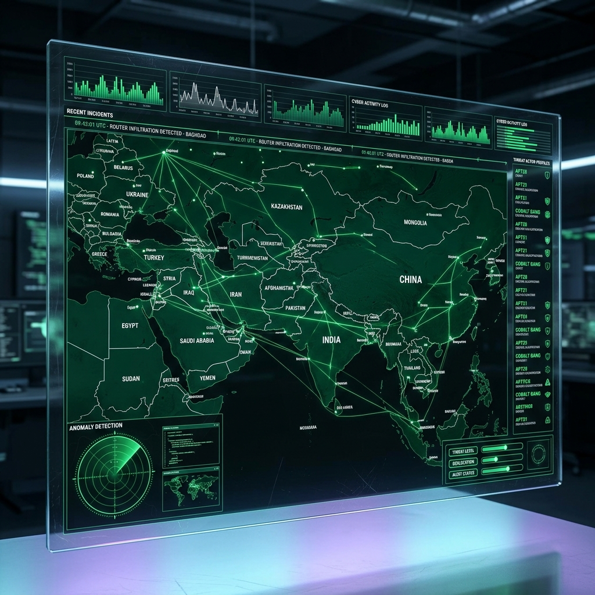

ParadoxAIS Explained
A deep dive into the Geopolitical Decision Engine. Discover how moving from data aggregation to causal simulation eliminates defensive bias in high-stakes environments.
The Problem: Defensive Bias
Current geopolitical risk assessment is strictly reactive. Decision-makers in defense and global finance rely on static reports or data-heavy dashboards that tell them what is happening, but fail to project what will happen next or how to respond.
This abundance of data without causal context leads to "defensive bias"—over-reacting to threats or missing subtle de-escalation opportunities simply because the human cost of being wrong is too high.

The Solution & The Secret
ParadoxAIS is a "simulation-first" intelligence platform. It does not just aggregate data; it builds a living model of the world to test "What If" scenarios in a mathematically safe environment. It identifies the causal links between events (e.g., how a regional trade disruption impacts global energy prices) and recommends specific, risk-adjusted actions.
The secret is that causal simulation, not data aggregation, is the only way to de-bias human decision-making. By modeling the underlying mechanics of a crisis rather than just its symptoms, ParadoxAIS allows users to find the non-obvious de-escalation pathways that big-data dashboards miss.
How It Works (User Flow)
The product is presented as a high-fidelity, interactive command center—similar to a tactical map in a modern strategy game. Designed specifically for defense analysts, geopolitical researchers, and commodity trading desks.
- 1. Monitor: The user observes a global live-feed of geopolitical "signals" (natural disasters, troop movements, economic shifts) updated every 45 seconds.
- 2. Trigger: The user selects a region or a specific signal and initiates a "What If" scenario (e.g., "What if oil prices increase by 30%?").
- 3. Simulate: The engine runs 1,000+ Monte Carlo simulations in seconds, modeling every possible outcome and its probability.
- 4. Execute: The system outputs a Strategic Briefing containing the Prediction, the Causal Narrative, and a 3-5 step Action Plan.

Example Scenario: The 2019 Aramco Attack
To understand the difference between heuristic models and causal simulation, consider the 2019 drone attacks on Saudi oil facilities.
- The Input: Kinetic strikes on global energy infrastructure.
- The Simulation: ParadoxAIS models the impact on global supply chains, political stability, and regional tensions simultaneously.
- The Output: While most traditional systems flagged "High Alert" and prepared for immediate escalation, ParadoxAIS assigned a 78% probability to a neutral (non-escalatory) outcome, accurately aligning with the actual historical geopolitical response.
- Result: Providing a strategy that avoids unnecessary escalation while maintaining defensive readiness.
Technology (Simplified)
ParadoxAIS replaces black-box AI with a causal simulation engine that models how events influence each other over time.
- Knowledge Base (Atlas Graph): A global graph of relationships between countries, commodities, and risk factors.
- Simulation Engine: A mathematical model that runs thousands of "virtual worlds" (Monte Carlo pathways) to find the most likely future.
- Decision Scoring: A formulaic approach (
Reward - Risk * Uncertainty) that ensures recommendations are mathematically sound and free from human emotional bias.
Validation & Proof
In our latest v4 Validation Run across 103 historical geopolitical event nodes (including events such as the 2022 Russia-Ukraine conflict and Taiwan Strait tensions), ParadoxAIS achieved:
- 75.73% overall accuracy in predicting escalation vs. de-escalation outcomes.
- 78 of 103 cases matched the actual historical ground truth.
- 78.0% Average Model Confidence across the full dataset.
The system consistently outperforms baseline heuristic and rule-based models used in traditional risk analysis, specifically by identifying non-obvious de-escalation windows prior to kinetic exchanges.